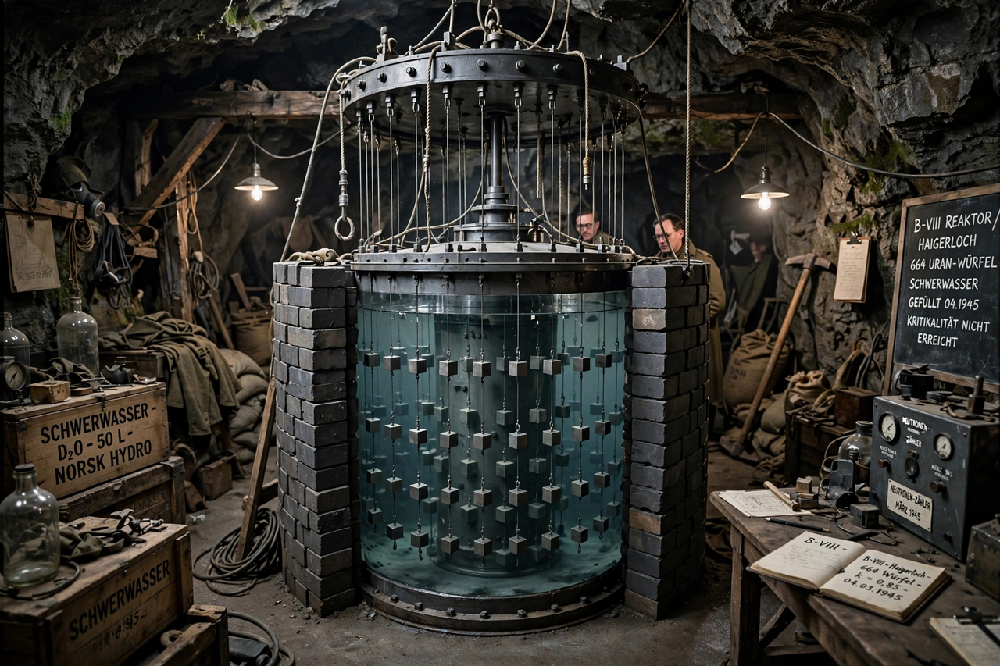

German nuclear weapons program

The German nuclear weapons program (German: Uranprojekt, "Uranium Project") was an effort led by Nazi Germany to develop and produce nuclear weapons during World War II. Starting with a small effort in April 1939, just months after the discovery of nuclear fission in Berlin in December 1938, the program eventually expanded to include three parallel efforts: the development of a nuclear reactor (a Uranmaschine, "uranium machine"), uranium and heavy water production, and uranium isotope separation. Ultimately it was judged that nuclear fission would not contribute significantly to ending the war in the near term, and in January 1942, control of the program was transferred from the German Army Ordnance Office to the Reich Research Council.
| Country | Nazi Germany |
|---|---|
| Period | 1939–1945 |
| Key figures | Werner Heisenberg, Otto Hahn, Walther Bothe, Kurt Diebner |
| Outcome | No weapon produced; research reactor never achieved criticality |
Origins
Nuclear fission was discovered in December 1938 by Otto Hahn and Fritz Strassmann in Berlin, and explained theoretically by Lise Meitner and Otto Robert Frisch. In April 1939, scientists at Göttingen alerted the authorities to the possibility of chain reactions, and the Army Ordnance Office convened a conference in Berlin. A second conference in September 1939 brought leading physicists into the project, including Werner Heisenberg, who became the leading theoretical figure of the main group at Leipzig and Berlin.
The program
The program suffered from fragmentation: at least three competing groups operated under different organisations. Heisenberg's group pursued a reactor using uranium and heavy water obtained from the Norsk Hydro plant at Vemork in occupied Norway; Allied sabotage and bombing raids (notably the Norwegian heavy water sabotage) repeatedly disrupted that supply. The B-VIII experiment at Haigerloch in early 1945, the program's last reactor attempt, failed to reach criticality because of insufficient size. Assessments after the war concluded the German effort never came close to a bomb: it lacked a large-scale isotope separation programme comparable to the Manhattan Project and remained at the stage of basic reactor research.
Farm Hall
At the end of the war, ten leading German nuclear scientists were detained by the Allies at Farm Hall, a house in Godmanchester, England, under Operation Epsilon. Their conversations were secretly recorded; the transcripts, released decades later, record their surprise at the news of the Hiroshima bombing in August 1945 and remain a subject of historical debate about how far the German scientists had understood the path to a weapon.
Historiography
Historians continue to debate why the program failed: explanations include the emigration of many leading physicists in the 1930s, scientific misjudgements (such as Walther Bothe's erroneous measurement that led researchers to reject graphite as a moderator), bureaucratic fragmentation, and the priority given to other weapons programmes such as the V-2 rocket. Unlike the Allied Manhattan Project, which employed hundreds of thousands of people, the Uranprojekt remained a comparatively small research effort.